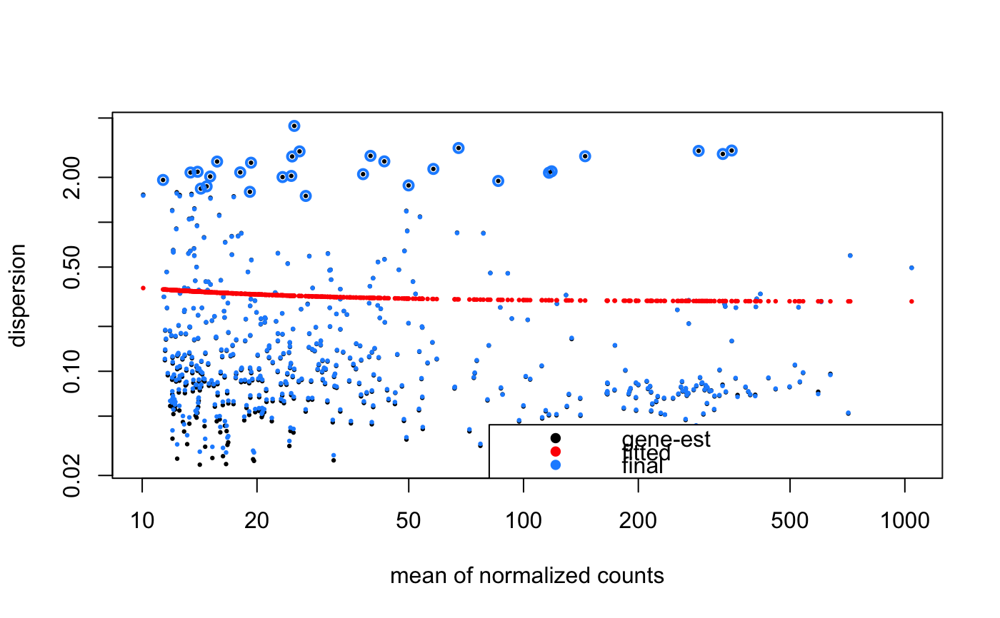

We now generally recommend the ZINB-WaVE method over zingeR, since it is faster, and has been show to be more sensitive for most single-cell RNA-seq datasets.
diffExp(object, ...) # S4 method for SingleCellExperiment diffExp(object, numerator, denominator, zeroWeights = c("zinbwave", "zingeR"), caller = c("edgeR", "DESeq2"), minCellsPerGene = 25L, minCountsPerCell = 5L) # S4 method for seurat diffExp(object, numerator, denominator, zeroWeights = c("zinbwave", "zingeR"), caller = c("edgeR", "DESeq2"), minCellsPerGene = 25L, minCountsPerCell = 5L)
| object | Object. |
|---|---|
| ... | Additional arguments. |
| numerator | Group of cells to use in the numerator of the contrast (e.g. treatment). |
| denominator | Group of cells to use in the denominator of the contrast (e.g. control). |
| zeroWeights | Package to use for zero weight calculations. Defaults to zinbwave but zingeR is also supported. |
| caller | Package to use for differential expression calling. Defaults to edgeR (faster for large datasets) but DESeq2 is also supported. |
| minCellsPerGene | The minimum number of cells where a gene is expressed,
to pass low expression filtering. Set to |
| minCountsPerCell | Minimum number of counts per cell for a gene to pass
low expression filtering. The number of cells is defined by
|
caller = "edgeR": DEGLRT.
caller = "DESeq2": Unshrunken DESeqResults. Use lfcShrink() if
shrunken results are desired.
We are currently using an epsilon setting of 1e12, as recommended by the ZINB-WaVE integration paper.
We first perform a differential expression analysis using zingeR posterior
probabilities and focussing on the count component of the ZINB model. The
weights are estimated with the core function of zingeR, zeroWeightsLS(). It
is important to be consistent with the normalization procedure, i.e. if you
use TMM normalization for the analysis, you should also use it for estimating
the zingeR posterior probabilities.
After estimation of the dispersions and posterior probabilities, the
glmWeightedF() function is used for statistical inference. This is an
adapted function from the glmLRT() function of edgeR. It uses an F-test for
which the denominator degrees of freedom are by default adjusted according to
the downweighting of excess zeros (ZI = TRUE). Also, independent filtering
can be performed on the obtained p-values (independentFiltering = TRUE). We
use the independent filtering strategy that was originally implemented in
DESeq2. By default, the average fitted values are used as a filter criterion.
Consult the following sources for more information:
DESeq2: We're trying to follow the conventions used in DESeq2 for
contrasts, defining the name of the factor in the design formula,
numerator, and denominator level for the fold change calculations. See
DESeq2::results() for more information.
Seurat: Note that Seurat currently uses the convention cells.1 for the
numerator and cells.2 for the denominator. See Seurat::DiffExpTest()
for additional information.
# SingleCellExperiment ==== m <- metrics(cellranger_small) numerator <- rownames(m)[which(m[["sampleName"]] == "proximal")] denominator <- rownames(m)[which(m[["sampleName"]] == "distal")] # zinbwave-DESeq2 x <- diffExp( object = cellranger_small, numerator = numerator, denominator = denominator, zeroWeights = "zinbwave", caller = "DESeq2" )#>#>#>#> #>#> genes #> TRUE #> 500 #> user system elapsed #> 102.367 2.503 35.256#>#>#>#>#>#>#>#> user system elapsed #> 176.828 2.868 182.050#> $rect #> $rect$w #> [1] 1.188434 #> #> $rect$h #> [1] 0.35884 #> #> $rect$left #> [1] 1.909997 #> #> $rect$top #> [1] -1.358794 #> #> #> $text #> $text$x #> [1] 2.258307 2.258307 2.258307 #> #> $text$y #> [1] -1.448504 -1.538214 -1.627924 #> #>class(x)#> [1] "DESeqResults" #> attr(,"package") #> [1] "DESeq2"head(x)#> log2 fold change (MLE): group numerator vs denominator #> LRT p-value: '~ group' vs '~ 1' #> DataFrame with 6 rows and 6 columns #> baseMean log2FoldChange lfcSE stat pvalue #> <numeric> <numeric> <numeric> <numeric> <numeric> #> ENSG00000005022 40.6946883919453 0.0969614143415067 0.0583898490050989 2.74885559613085 0.0973240650417439 #> ENSG00000008018 14.8932881299383 0.592146719221284 0.0635287124600374 86.8346534696238 1.17984003724583e-20 #> ENSG00000008394 39.5480029505622 1.18187261290727 0.0911514348619983 152.376927876437 5.24138622879893e-35 #> ENSG00000008988 217.581034338649 -0.635753413462794 0.0360206306430627 325.539996396201 8.99915778524178e-73 #> ENSG00000026025 18.0728087783362 -0.68221630287468 0.242477684485772 7.98031541354476 0.00472887021635307 #> ENSG00000029993 13.9244947453213 -1.2302100247238 0.145219274973856 78.0883321336796 9.8534261071521e-19 #> padj #> <numeric> #> ENSG00000005022 0.108190905285977 #> ENSG00000008018 2.77905449531364e-20 #> ENSG00000008394 1.91541834978902e-34 #> ENSG00000008988 1.27788040550433e-71 #> ENSG00000026025 0.00577456633299134 #> ENSG00000029993 2.1765123445576e-18# zinbwave-edgeR x <- diffExp( object = cellranger_small, numerator = numerator, denominator = denominator, zeroWeights = "zinbwave", caller = "edgeR" )#>#> #>#> genes #> TRUE #> 500 #> user system elapsed #> 30.777 0.946 32.260class(x)#> [1] "DGELRT" #> attr(,"package") #> [1] "edgeR"head(x[["table"]])#> logFC logCPM LR PValue #> ENSG00000005022 0.1774111 10.050237 9.141339 2.626271e-03 #> ENSG00000008018 0.6793362 8.731102 106.773456 7.863967e-23 #> ENSG00000008394 1.2591768 10.027434 168.536534 1.887592e-33 #> ENSG00000008988 -0.5308476 12.389327 308.188318 3.441931e-54 #> ENSG00000026025 -0.5718466 9.516885 5.725923 1.729285e-02 #> ENSG00000029993 -1.1655945 8.681385 69.050417 9.760156e-16# seurat ==== # Expression in cluster 3 relative to cluster 2 numerator <- Seurat::WhichCells(Seurat::pbmc_small, ident = 3L) denominator <- Seurat::WhichCells(Seurat::pbmc_small, ident = 2L) x <- diffExp( object = Seurat::pbmc_small, numerator = numerator, denominator = denominator, caller = "edgeR", minCellsPerGene = 5L, minCountsPerCell = 5L )#>#> #>#> genes #> FALSE TRUE #> 213 17 #> user system elapsed #> 0.929 0.015 0.947class(x)#> [1] "DGELRT" #> attr(,"package") #> [1] "edgeR"head(x[["table"]])#> logFC logCPM LR PValue #> NKG7 -8.0978765 17.95711 4.001607e-05 0.995039029 #> CCL5 0.3327462 16.86562 1.538144e+00 0.228265805 #> TYROBP 3.6536228 16.70005 1.240148e+01 0.003558917 #> LGALS1 1.8190557 16.37732 1.723488e+00 0.207087609 #> FCER1G 0.1598044 15.97882 1.737223e-02 0.896824369 #> PPBP 9.3502205 19.18038 1.125326e-08 0.999917035